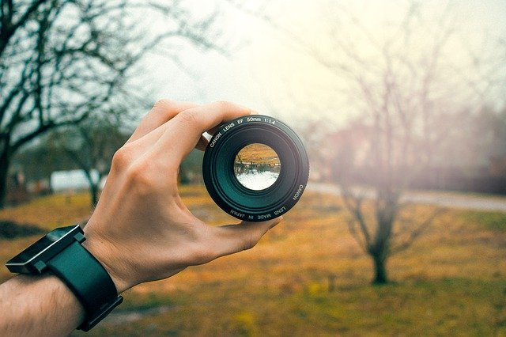
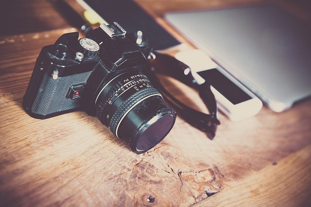
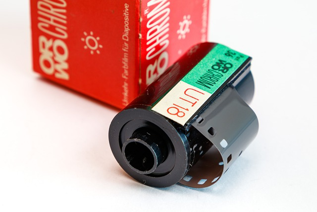

Digital

La cámara digital nos permite fotografiar una imagen y crear de manera inmediata un documento en formatos estandarizados para el ordenador u otros dispositivos. La cámara digital utiliza como plano de enfoque su sensor CCD o Dispositivo de Carga Acoplada. Este tipo de sensor es electrónico, sensible a la luz y trabaja a manera de líneas de píxeles con una cobertura de los colores primarios. Una vez realizada la toma, la fotografía se almacena en la tarjeta de memoria de la cámara.
Objetivo
La razón de ser del objetivo es dirigir los rayos de luz desde el exterior al interior de tu cámara, haciéndolos coincidir sobre la superficie sensible a la luz. Cuando apuntas tu cámara hacia un lugar, el objetivo canaliza la luz que proviene de allí hacia su interior, permitiendo que el fotómetro mida su intensidad (lo que permite que la cámara estime cuánta luz debe dejar pasar cuando pulsas el botón).
Analógica
En la cámara análoga, o tradicional, la fotografía es guardada en una película sensible a la luz (rollo), mientras que en la cámara digital es guardada en una memoria luego de haber sido procesada en un elemento electrónico (sensor).
Carrete
Cuando tomamos una fotografía la luz entra en contacto con la superficie transparente de la película, quedando “impresa” en forma de imagen latente hasta el momento del revelado. Por ello hay que tener cuidado de no abrir la cámara hasta que hayamos finalizado y rebobinado el carrete para evitar que este se vele.